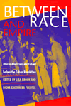
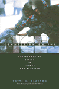
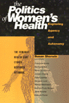

|
|
AIDS
Alibis
Sex, Drugs, and Crime in the Americas
Kane,
Stephanie
A fresh, astute means for debating the issues connecting the
AIDS pandemic to government policy and crime in the Americas
256 pp • 5.5x8.25 • Spring 1998
paper 1-56639-628-X
EAN 978-1-56639-628-8
cloth 1-56639-627-1
EAN 978-1-56639-627-1
|
| 
|
Between
Race and Empire
African-Americans and Cubans before the Cuban Revolution
Brock,
Lisa, Digna Castenada-Fuertes, and Manning Marable
The relationship between the two peoples of color, their similar
experiences with slavery and reaching for political power, and
their parallel race consciousness
289 pp • 6x9 • Spring 1998
paper 1-56639-587-9
EAN 978-1-56639-587-8
cloth 1-56639-586-0
EAN 978-1-56639-586-1
|
|
|
Borderless
Borders
U.S. Latinos, Latin Americans, and the Paradox of Interdependence
Bonilla,
Frank, Edwin Melendez, Rebecca Morales, and Maria de los Angeles Torres
Over the past several decades, Latinos in the United States have
emerged as strategic actors in major processes of social transformation
336 pp • 6x9 • Spring 1998
paper 1-56639-620-4
EAN 978-1-56639-620-2
cloth 1-56639-619-0
EAN 978-1-56639-619-6
|
| 
|
Connection
on the Ice
Environmental Ethics in Theory and Practice
Clayton,
Patti H., and Charles Mason
An extraordinary whale rescue that revealed a great deal about
values and decision making and about how we think of ourselves
as human beings
352 pp • 6x9 • Spring 1998
paper 1-56639-616-6
EAN 978-1-56639-616-5
cloth 1-56639-615-8
EAN 978-1-56639-615-8
|
|
|
Dollars
and Votes
How Business Campaign Contributions Subvert Democracy
Clawson,
Dan, Alan Neustadtl, and Mark Weller
How does the campaign finance system really work—and why
do corporate executives say they contribute?
256 pp • 6x9 • Spring 1998
paper 1-56639-626-3
EAN 978-1-56639-626-4
cloth 1-56639-625-5
EAN 978-1-56639-625-7
|
|
|
Families
in the U.S.
Kinship and Domestic Politics
Hansen,
Karen V., and Anita Ilta Garey
Leading feminist scholars contemplate the complexity of today's
American families
944 pp • 7x10 • Spring 1998
paper 1-56639-590-9
EAN 978-1-56639-590-8
cloth 1-56639-589-5
EAN 978-1-56639-589-2
|
|
|
Frank
Capra
Authorship and the Studio System
Sklar,
Robert, and Vito Zagarrio
Legendary film director Frank Capra composed a unique American
vision, but how was that vision influenced by the strategies and
production style of Columbia? Pictures?
304 pp • 5.5x8.25 • Spring 1998
paper 1-56639-608-5
EAN 978-1-56639-608-0
cloth 1-56639-607-7
EAN 978-1-56639-607-3
|
|
|
Gatherings
in Diaspora
Religious Communities and the New Immigration
Warner,
Stephen R., and Judith G. Wittner
The new religious communities of the United States in their churches,
mosques, temples, home meetings, and festivals, being built by
immigrants
416 pp • 6x9 • Spring 1998
paper 1-56639-614-X
EAN 978-1-56639-614-1
cloth 1-56639-613-1
EAN 978-1-56639-613-4
|
|
|
Identity
and Power
Puerto Rican Politics and the Challenge of Ethnicity
Cruz,
Jose E.
Identity politics as a positive force in political mobilization
and access to power
296 pp • 6x9 • Spring 1998
paper 1-56639-605-0
EAN 978-1-56639-605-9
cloth 1-56639-604-2
EAN 978-1-56639-604-2
|
|
|
Insane
Therapy
Portrait of a Psychotherapy Cult
Ayella,
Marybeth F.
Group therapy goes awry in one community and shows how vulnerable
we all can be to cult mentality
213 pp • 6x9 • Spring 1998
paper 1-56639-601-8
EAN 978-1-56639-601-1
cloth 1-56639-600-X
EAN 978-1-56639-600-4
|
|
|
Legal
Bases
Baseball and the Law
Abrams,
Roger I.
An accessible, insightful look at how baseball and salary arbitration
are shaped by law
240 pp • 6x9 • Spring 1998
cloth 1-56639-599-2
EAN 978-1-56639-599-1
|
|
|
A
Nation by Rights
National Cultures, Sexual Identity Politics, and the Discourse
of Rights
Stychin,
Carl F.
How sexuality and sexual orientation intersect with gender, race,
ethnicity, and religion in the ongoing formation of national identity
256 pp • 5.5x8.25 • Spring 1998
paper 1-56639-624-7
EAN 978-1-56639-624-0
cloth 1-56639-623-9
EAN 978-1-56639-623-3
|
|
|
One-Eyed
Science
Occupational Health and Women Workers
Messing,
Karen, and Jeanne Stellman
A provocative look at why researchers are blind to the health
problems of women workers
264 pp • 5.5x8.2 • Spring 1998
paper 1-56639-598-4
EAN 978-1-56639-598-4
cloth 1-56639-597-6
EAN 978-1-56639-597-7
|
|
|
Performing
Asian America
Race and Ethnicity on the Contemporary Stage
Lee, Josephine
A fascinating inquiry into the territory of race and ethnicity
in American theater
New in Paperback!
256 pp • 6x9 • Spring 1997
paper 1-56639-637-9
EAN 978-1-56639-637-0
|
|
|
Politics
and Popular Culture
Street,
John
The cohabitation of politics and pop culture create a reconception
of their influence on our judgments and expectations
224 pp • 6x9 • Spring 1998
paper 1-56639-603-4
EAN 978-1-56639-603-5
cloth 1-56639-602-6
EAN 978-1-56639-602-8
|
| 
|
The
Politics of Women's Health
Exploring Agency and Autonomy
Sherwin,
Susan, and the Feminist Healthcare Network
The practical issues of women's empowerment in the health-care
system and the deep assumptions and values that underlie that
system
321 pp • 6x9 • Spring 1998
paper 1-56639-633-6
EAN 978-1-56639-633-2
cloth 1-56639-632-8
EAN 978-1-56639-632-5
|
|
|
The
Possessive Investment in Whiteness
How White People Profit from Identity Politics
Lipsitz,
George
In this unflinching look at white supremacy, George Lipsitz probes
into the ways that race determines life chances and structures
experience in the contemporary United States
312 pp • 6x9 • Spring 1998
paper 1-56639-635-2
EAN 978-1-56639-635-6
cloth 1-56639-634-4
EAN 978-1-56639-634-9
|
| 
|
The
Poverty of American Politics
A Theoretical Interpretation
Roelofs,
H. Mark
This classic analysis challenges America's complacency about
its political system
Second Edition
368 pp • 6x9 • Spring 1998
paper 1-56639-606-9
EAN 978-1-56639-606-6
|
|
|
The
Puerto Rican Movement
Voices from the Diaspora
Torres,
Andres, and Jose E. Velazquez
A long-awaited collection documents a missing chapter in the
history of U.S. radicalism
432 pp • 6x9 • Spring 1998
paper 1-56639-618-2
EAN 978-1-56639-618-9
cloth 1-56639-617-4
EAN 978-1-56639-617-2
|
|
|
Reggae
Routes
The Story of Jamaican Music
Chang,
Kevin O’Brien, and Wayne Chen
Reggae's pulsating rhythms and appeals for social justice have
galvanized music audiences all over the world
256 pp • 7x10 • Spring 1998
paper 1-56639-629-8
EAN 978-1-56639-629-5
|
|
|
Return
of Guatemala's Refugees
Reweaving the Torn
Taylor,
Clark
Survivors of Guatemala's violent unrest rebuild their community
in the face of political and economic challenges
248 pp • 5.5x8.2 • Spring 1998
paper 1-56639-622-0
EAN 978-1-56639-622-6
cloth 1-56639-621-2
EAN 978-1-56639-621-9
|
| 
|
Silicone
Survivors
Women's Experiences with Breast Implants
Zimmermann,
Susan M
How a group of women's experiences with breast implants and the
medical profession affected their feelings about themselves and
their bodies
240 pp • 6x9 • Spring 1998
paper 1-56639-612-3
EAN 978-1-56639-612-7
cloth 1-56639-611-5
EAN 978-1-56639-611-0
|
|
|
Stacked
Deck
A Story of Selfishness in America
Mitchell,
Lawrence E
Reversing the pattern of entrenched individualism in American
society
264 pp • 6x9 • Spring 1998
cloth 1-56639-592-5
EAN 978-1-56639-592-2
|
|
|
Underground
Woman
My Four Years as a New York City Subway Conductor
Swerdlow,
Marian
The strange world of the New York subways by one of the first
women to work as a conductor
272 pp • 6x9 • Spring 1998
paper 1-56639-610-7
EAN 978-1-56639-610-3
cloth 1-56639-609-3
EAN 978-1-56639-609-7
|
|
|
The
Wild Animal Story
Lutts,
Ralph H.
An anthology of some of the most celebrated animal stories ever
collected
328 pp • 6x9 • Spring 1998
cloth 1-56639-593-3
EAN 978-1-56639-593-9
|